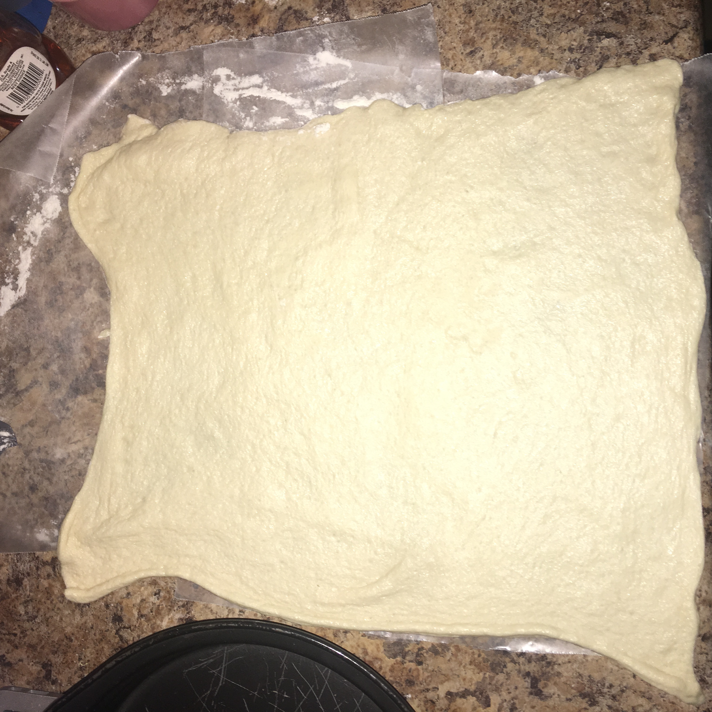
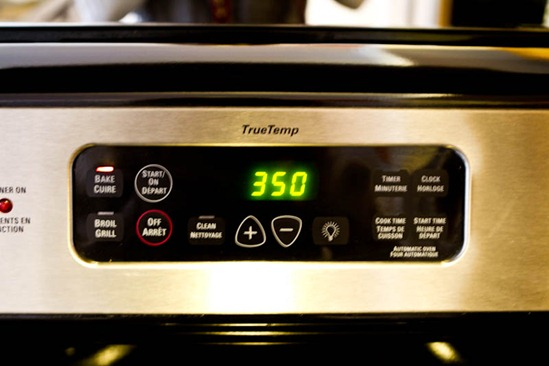

Ingredients needed: premade dough, pizza sauce, cheese of your choice preferably mozerella or parmesan, oven, pan to put pizza on, pizza cutter, toppings of choice.
Step #1 Roll out your dough you can buy this premade at your local groccery store
Step #2 Get your sauce of your choice for your pizza and begin placing and spreading it out evenly around the pizza
Step #3 After your sauce is spreaded out evenly, begin to start placing the meats of your choice and also you can butter saute the crest with garlic
Step #4 Add more of your cheeses of your choice on top to cover up the meats spread evenly around

Step #5 Preheat your oven to the tempature the dough is supposed to be cooked at. Look at the directions on on the can or bag the dough came out of for this step.
Step #6 Cook to the approiate time or the time the dough is supposed to be cook at for the golden sensation you desire